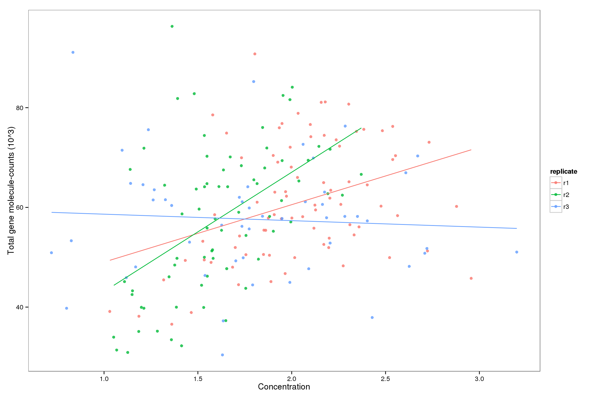
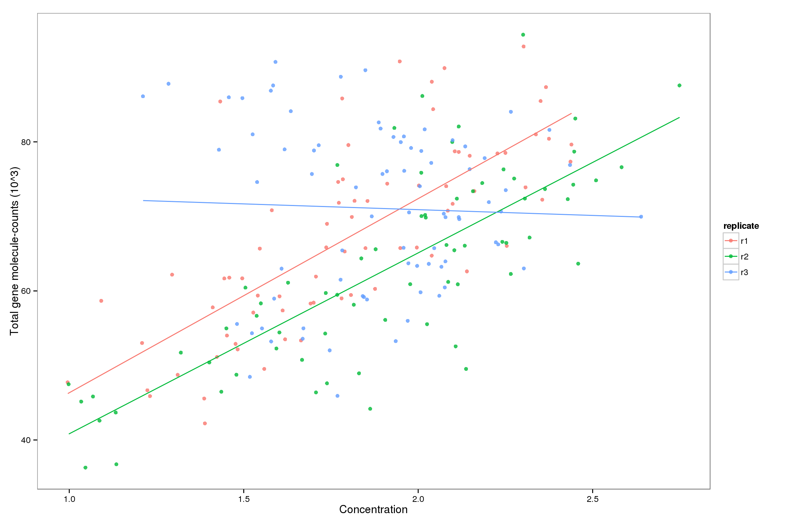
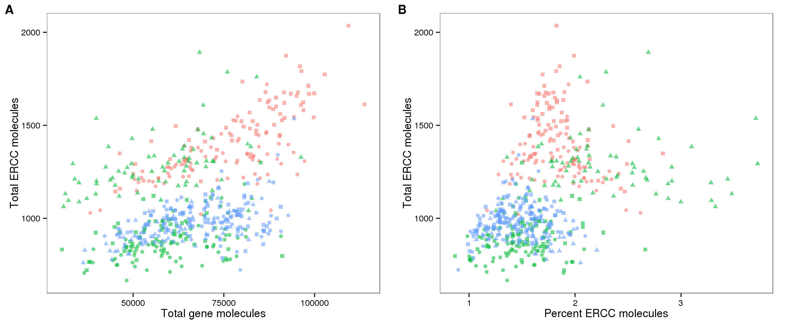
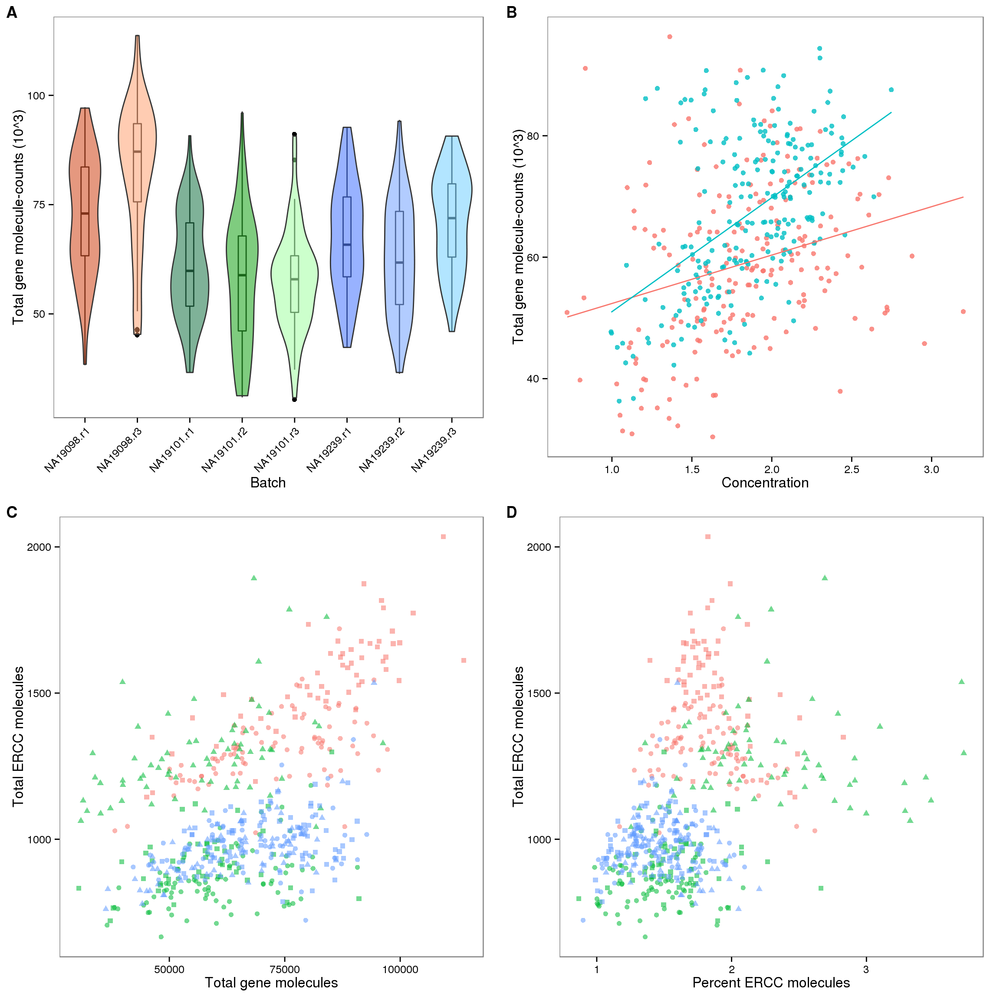

Total molecule counts
Po-Yuan Tung
2016-04-18
Last updated: 2016-04-28
Code version: 619e90fd099bbed4c78929c937abbdbdaad65b88
Recreate the Sequencing depth and cellular RNA content using updated data files to make figures for the paper.
Setup
library("dplyr")
library("tidyr")
library("edgeR")
library("lmtest")
library("ggplot2")
library("cowplot")
theme_set(theme_bw(base_size = 12))
theme_update(panel.grid.minor.x = element_blank(),
panel.grid.minor.y = element_blank(),
panel.grid.major.x = element_blank(),
panel.grid.major.y = element_blank())
source("functions.R")Input annotation
anno_single <- read.table("../data/annotation.txt", header = TRUE,
stringsAsFactors = FALSE)
head(anno_single) individual replicate well batch sample_id
1 NA19098 r1 A01 NA19098.r1 NA19098.r1.A01
2 NA19098 r1 A02 NA19098.r1 NA19098.r1.A02
3 NA19098 r1 A03 NA19098.r1 NA19098.r1.A03
4 NA19098 r1 A04 NA19098.r1 NA19098.r1.A04
5 NA19098 r1 A05 NA19098.r1 NA19098.r1.A05
6 NA19098 r1 A06 NA19098.r1 NA19098.r1.A06Input single cell observational quality control data.
qc <- read.table("../data/qc-ipsc.txt", header = TRUE,
stringsAsFactors = FALSE)
qc <- qc %>% arrange(individual, replicate, well)
stopifnot(qc$individual == anno_single$individual,
qc$replicate == anno_single$replicate,
qc$well == anno_single$well)
head(qc) individual replicate well cell_number concentration tra1.60
1 NA19098 r1 A01 1 1.734785 1
2 NA19098 r1 A02 1 1.723038 1
3 NA19098 r1 A03 1 1.512786 1
4 NA19098 r1 A04 1 1.347492 1
5 NA19098 r1 A05 1 2.313047 1
6 NA19098 r1 A06 1 2.056803 1Incorporate informatin on cell number, concentration, and TRA1-60 status.
anno_single$cell_number <- qc$cell_number
anno_single$concentration <- qc$concentration
anno_single$tra1.60 <- qc$tra1.60Keep only quality single cell
quality_single_cells <- scan("../data/quality-single-cells.txt",
what = "character")
anno_single <- anno_single[anno_single$sample_id %in% quality_single_cells,]Input molecule counts after filtering
molecules <- read.table("../data/molecules-filter.txt", header = TRUE,
stringsAsFactors = FALSE)
stopifnot(colnames(molecules) == anno_single$sample_id)
ercc_index <- grepl("ERCC", rownames(molecules))
anno_single$total_molecules_gene = colSums(molecules[!ercc_index, ])
anno_single$total_molecules_ercc = colSums(molecules[ercc_index, ])
anno_single$total_molecules = colSums(molecules)
anno_single$num_genes = apply(molecules[!ercc_index, ], 2, function(x) sum(x > 0))The total molecule-counts (not including NA19098)
For wells with a single cell observed, the total molecule-counts range from 30408 to 96315, the first quartile for the total number of gene molecules is 55561.25, and the third quartile is 78173.25.
## create a color palette with one color per individual and different shades for repplicates
great_color_8 <- c("#CC3300", "#FF9966", "#006633", "#009900", "#99FF99", "#3366FF", "#6699FF", "#66CCFF")
plot_total_molecules_gene <- ggplot(anno_single,
aes(x = as.factor(batch), y = total_molecules_gene / 10^3, fill = as.factor(batch))) +
geom_boxplot(alpha = .01, width = .2) +
geom_violin(alpha = .5) +
scale_fill_manual(values = great_color_8) +
labs(x = "Batch", y = "Total gene molecule-counts (10^3)") +
theme(axis.text.x = element_text(hjust=1, angle = 45))
plot_total_molecules_ercc <- plot_total_molecules_gene %+%
aes(y = total_molecules_ercc / 10^3) +
labs(y = "Total ERCC molecule-counts (10^3)")
summary(aov(total_molecules_gene ~ individual, data = anno_single)) Df Sum Sq Mean Sq F value Pr(>F)
individual 2 2.571e+10 1.286e+10 70.39 <2e-16 ***
Residuals 561 1.025e+11 1.827e+08
---
Signif. codes: 0 '***' 0.001 '**' 0.01 '*' 0.05 '.' 0.1 ' ' 1plot_grid(plot_total_molecules_gene + theme(legend.position = "none"),
plot_total_molecules_ercc + theme(legend.position = "none"),
labels = LETTERS[1:2])
The relationship between concentration and total molecule-counts
As we try to understand the general relationships between sequencing results and cellular mRNA content, we remove outlier batches. NA19098 replicate 1 failed the quantification of the concentration of the single cells and was hence removed. Because NA19098 concentration is only quantified in one replicate, we removed NA19098 from analysis involving batch differences and concentration.
anno_single_6 <- anno_single %>% filter(individual != "NA19098")## look at endogenous genes
plot_conc_molecules_gene_individual <-
ggplot(anno_single_6,
aes(x = concentration,
y = total_molecules_gene / 10^3, color = individual)) +
geom_point(alpha = 0.8) +
geom_smooth(method = "lm", se = FALSE) +
labs(x = "Concentration", y = "Total gene molecule-counts (10^3)")
## look at ERCC spike-ins
plot_conc_molecules_ercc_individual <-
plot_conc_molecules_gene_individual %+%
aes(y = total_molecules_ercc / 10^3) +
labs(y = "Total ERCC molecule-counts (10^3)")
## plots
plot_grid(plot_conc_molecules_gene_individual + theme(legend.position = "none"),
plot_conc_molecules_ercc_individual + theme(legend.position = "none"),
labels = LETTERS[1:2])
## Is there a difference across the three individuals
table(anno_single_6$individual, anno_single_6$replicate)
r1 r2 r3
NA19101 80 70 51
NA19239 74 68 79fit0 <- lm(total_molecules_gene ~ concentration,
data = anno_single_6)
fit1 <- lm(total_molecules_gene ~ concentration + as.factor(individual),
data = anno_single_6)
# use likelihood ratio test to detect individual differences
lrtest(fit1, fit0)Likelihood ratio test
Model 1: total_molecules_gene ~ concentration + as.factor(individual)
Model 2: total_molecules_gene ~ concentration
#Df LogLik Df Chisq Pr(>Chisq)
1 4 -4555.1
2 3 -4577.1 -1 43.956 3.358e-11 ***
---
Signif. codes: 0 '***' 0.001 '**' 0.01 '*' 0.05 '.' 0.1 ' ' 1## Is there a difference across replicates of 19101
fit0 <- lm(total_molecules_gene ~ concentration,
data = anno_single_6, subset = individual == "NA19101")
fit1 <- lm(total_molecules_gene ~ concentration + as.factor(replicate),
data = anno_single_6, subset = individual == "NA19101")
# use likelihood ratio test to detect individual differences
lrtest(fit1, fit0)Likelihood ratio test
Model 1: total_molecules_gene ~ concentration + as.factor(replicate)
Model 2: total_molecules_gene ~ concentration
#Df LogLik Df Chisq Pr(>Chisq)
1 5 -2180.5
2 3 -2180.8 -2 0.6238 0.7321# quick line plot
ggplot(anno_single_6[anno_single_6$individual == "NA19101", ],
aes(x = concentration,
y = total_molecules_gene / 10^3, color = replicate)) +
geom_point(alpha = 0.8) +
geom_smooth(method = "lm", se = FALSE) +
labs(x = "Concentration",
y = "Total gene molecule-counts (10^3)")
## Is there a difference across replicates of 19239
fit0 <- lm(total_molecules_gene ~ concentration,
data = anno_single_6, subset = individual == "NA19239")
fit1 <- lm(total_molecules_gene ~ concentration + as.factor(replicate),
data = anno_single_6, subset = individual == "NA19239")
ggplot(anno_single_6[anno_single_6$individual == "NA19239", ],
aes(x = concentration,
y = total_molecules_gene / 10^3, color = replicate)) +
geom_point(alpha = 0.8) +
geom_smooth(method = "lm", se = FALSE) +
labs(x = "Concentration",
y = "Total gene molecule-counts (10^3)")
# use likelihood ratio test to detect individual differences
lrtest(fit1, fit0)Likelihood ratio test
Model 1: total_molecules_gene ~ concentration + as.factor(replicate)
Model 2: total_molecules_gene ~ concentration
#Df LogLik Df Chisq Pr(>Chisq)
1 5 -2351.6
2 3 -2365.0 -2 26.662 1.623e-06 ***
---
Signif. codes: 0 '***' 0.001 '**' 0.01 '*' 0.05 '.' 0.1 ' ' 1Calculate correlation of concentration and molecule counts
## for each individual
for (i in 1:length(unique(anno_single_6$individual))) {
print(unique(anno_single_6$individual)[i])
select_individual <- with(anno_single_6, individual == unique(individual)[i])
print(cor(anno_single_6[select_individual,7],anno_single_6[select_individual,9]))
}[1] "NA19101"
[1] 0.2767428
[1] "NA19239"
[1] 0.524656## for each batch
for (i in 1:length(unique(anno_single_6$batch))) {
print(unique(anno_single_6$batch)[i])
select_replicate <- with(anno_single_6, batch == unique(batch)[i])
print(cor(anno_single_6[select_replicate,7],
anno_single_6[select_replicate,9]))
}[1] "NA19101.r1"
[1] 0.3607414
[1] "NA19101.r2"
[1] 0.5084765
[1] "NA19101.r3"
[1] -0.0631127
[1] "NA19239.r1"
[1] 0.7466212
[1] "NA19239.r2"
[1] 0.7784135
[1] "NA19239.r3"
[1] -0.03799184ERCC counts and total molecule counts
## calulate ERCC percentage
anno_single <- anno_single %>%
mutate(perc_ercc_molecules = total_molecules_ercc / total_molecules * 100)
## ERCC molecule versus total molecule
plot_gene_mol_ercc_mol <- ggplot(anno_single,
aes(x = total_molecules_gene,
y = total_molecules_ercc)) +
geom_point(aes(color = individual, shape = replicate, alpha = 0.8))+
labs(x = "Total gene molecules", y = "Total ERCC molecules")
plot_gene_mol_perc_ercc <- plot_gene_mol_ercc_mol %+%
aes(x = perc_ercc_molecules)+
labs(x = "Percent ERCC molecules")
plot_grid(plot_gene_mol_ercc_mol + theme(legend.position = "none"),
plot_gene_mol_perc_ercc + theme(legend.position= "none"),
labels = LETTERS[1:2])
## Is there a difference across the three individuals
table(anno_single$individual, anno_single$replicate)
r1 r2 r3
NA19098 85 0 57
NA19101 80 70 51
NA19239 74 68 79fit0 <- lm(total_molecules_ercc ~ 1, data = anno_single)
fit1 <- lm(total_molecules_ercc ~ 1 + as.factor(individual), data = anno_single)
anova(fit0, fit1)Analysis of Variance Table
Model 1: total_molecules_ercc ~ 1
Model 2: total_molecules_ercc ~ 1 + as.factor(individual)
Res.Df RSS Df Sum of Sq F Pr(>F)
1 563 34614165
2 561 17394891 2 17219274 277.67 < 2.2e-16 ***
---
Signif. codes: 0 '***' 0.001 '**' 0.01 '*' 0.05 '.' 0.1 ' ' 1## Is there a difference across replicates for all individuals
table(anno_single$batch, anno_single$individual)
NA19098 NA19101 NA19239
NA19098.r1 85 0 0
NA19098.r3 57 0 0
NA19101.r1 0 80 0
NA19101.r2 0 70 0
NA19101.r3 0 51 0
NA19239.r1 0 0 74
NA19239.r2 0 0 68
NA19239.r3 0 0 79fit2 <- lm(total_molecules_gene ~ concentration + as.factor(individual) + batch,
data = anno_single)
summary(fit2)$coef Estimate Std. Error t value
(Intercept) 59887.763 2024.402 29.5829414
concentration 8493.346 1026.977 8.2702406
as.factor(individual)NA19101 -17606.151 2221.855 -7.9240756
as.factor(individual)NA19239 -4818.372 1983.119 -2.4296936
batchNA19098.r3 6981.848 2159.017 3.2338089
batchNA19101.r1 1385.609 2234.378 0.6201319
batchNA19101.r2 1776.442 2290.976 0.7754085
batchNA19239.r1 -3112.020 2007.401 -1.5502736
batchNA19239.r2 -8494.326 2050.918 -4.1417193
Pr(>|t|)
(Intercept) 3.619347e-116
concentration 9.941901e-16
as.factor(individual)NA19101 1.265325e-14
as.factor(individual)NA19239 1.542774e-02
batchNA19098.r3 1.294113e-03
batchNA19101.r1 5.354255e-01
batchNA19101.r2 4.384286e-01
batchNA19239.r1 1.216459e-01
batchNA19239.r2 3.984182e-05lrtest(fit1,fit2)Likelihood ratio test
Model 1: total_molecules_ercc ~ 1 + as.factor(individual)
Model 2: total_molecules_gene ~ concentration + as.factor(individual) +
batch
#Df LogLik Df Chisq Pr(>Chisq)
1 4 -3715.2
2 10 -6111.6 6 4792.8 < 2.2e-16 ***
---
Signif. codes: 0 '***' 0.001 '**' 0.01 '*' 0.05 '.' 0.1 ' ' 1Plots for paper
plot_grid(plot_total_molecules_gene + theme(legend.position = "none"),
plot_conc_molecules_gene_individual + theme(legend.position= "none"),
plot_gene_mol_ercc_mol + theme(legend.position = "none"),
plot_gene_mol_perc_ercc + theme(legend.position= "none"),
labels = LETTERS[1:4])
Session information
sessionInfo()R version 3.2.0 (2015-04-16)
Platform: x86_64-unknown-linux-gnu (64-bit)
locale:
[1] LC_CTYPE=en_US.UTF-8 LC_NUMERIC=C
[3] LC_TIME=en_US.UTF-8 LC_COLLATE=en_US.UTF-8
[5] LC_MONETARY=en_US.UTF-8 LC_MESSAGES=en_US.UTF-8
[7] LC_PAPER=en_US.UTF-8 LC_NAME=C
[9] LC_ADDRESS=C LC_TELEPHONE=C
[11] LC_MEASUREMENT=en_US.UTF-8 LC_IDENTIFICATION=C
attached base packages:
[1] stats graphics grDevices utils datasets methods base
other attached packages:
[1] cowplot_0.3.1 ggplot2_1.0.1 lmtest_0.9-34 zoo_1.7-12 edgeR_3.10.2
[6] limma_3.24.9 tidyr_0.2.0 dplyr_0.4.2 knitr_1.10.5
loaded via a namespace (and not attached):
[1] Rcpp_0.12.0 magrittr_1.5 MASS_7.3-40 munsell_0.4.2
[5] colorspace_1.2-6 lattice_0.20-31 R6_2.1.1 plyr_1.8.3
[9] stringr_1.0.0 httr_0.6.1 tools_3.2.0 parallel_3.2.0
[13] grid_3.2.0 gtable_0.1.2 DBI_0.3.1 htmltools_0.2.6
[17] lazyeval_0.1.10 yaml_2.1.13 assertthat_0.1 digest_0.6.8
[21] reshape2_1.4.1 formatR_1.2 bitops_1.0-6 RCurl_1.95-4.6
[25] evaluate_0.7 rmarkdown_0.6.1 labeling_0.3 stringi_0.4-1
[29] scales_0.2.4 proto_0.3-10